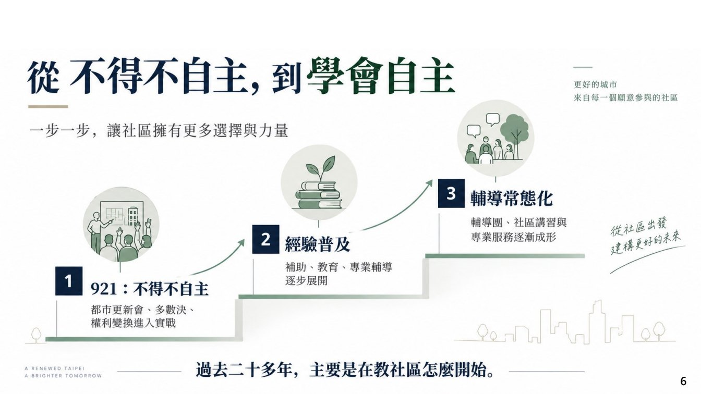
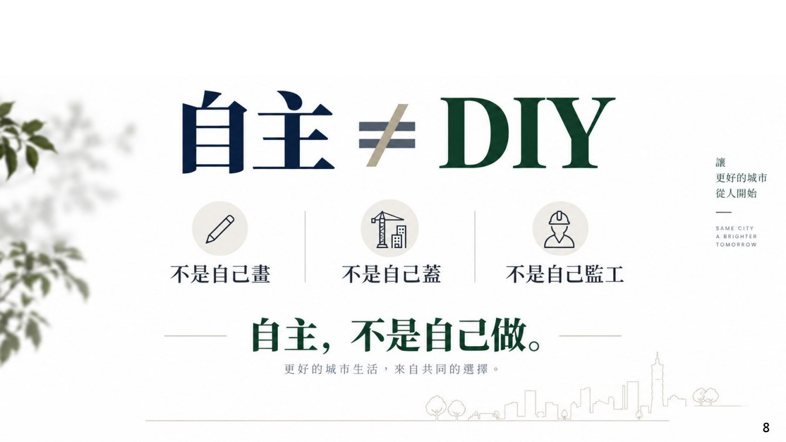
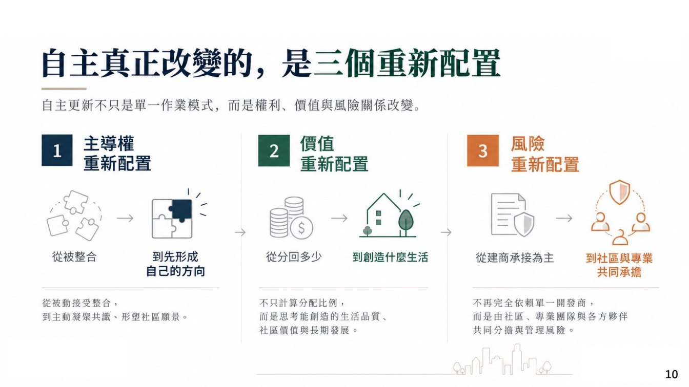

結構與公共安全
可先整理耐震、外牆剝落、漏水、消防、逃生動線等急迫問題；若涉及公共安全，再列入專業檢查與必要修繕的討論。
Topic 01
老宅延壽不是直接替社區下結論，而是在「尚未形成重建共識」或「基地條件還需要釐清」時，用安全、機能、維護與管理的角度，建立一套可以討論的問題架構。

Decision First
面對老屋，不是只有「拆或不拆」兩種答案。比較務實的做法，是先判斷問題屬於安全急迫、生活機能、設備老化、管理失靈，還是已經到了必須啟動重建評估的程度。
可先整理耐震、外牆剝落、漏水、消防、逃生動線等急迫問題；若涉及公共安全，再列入專業檢查與必要修繕的討論。
電力、給排水、電梯、管線、通風、隔熱與無障礙，會直接影響居住品質，也會影響社區是否能繼續使用。
延壽需要管理機制支撐。若修繕費用、公共空間責任與長期維護沒有共識，單次工程很難真正解決問題。
Checklist
| 整理面向 | 可討論的問題 | 可能需要的資料 | 下一步判斷 |
|---|---|---|---|
| 結構安全 | 是否有裂縫、傾斜、鋼筋外露、混凝土剝落或耐震疑慮？ | 建物圖說、耐震評估、修繕紀錄、專業檢查報告。 | 若安全風險高，可轉入危老或重建可行性評估。 |
| 設備管線 | 水電、排水、消防、電梯與弱電設備是否已進入高故障期？ | 設備年限、維修紀錄、估價單、使用者回報清單。 | 若可局部改善，可先做分期修繕；若全面老化，需評估整建維護或重建。 |
| 使用需求 | 高齡使用、無障礙、採光、通風、停車與收納是否已不符合需求？ | 需求調查、公共空間現況、室內配置問題。 | 若需求與原建築條件差距過大，延壽只能作為過渡方案。 |
| 財務負擔 | 修繕費誰出？一次性支出或長期維護費是否能被接受？ | 修繕預算、基金餘額、分攤方式、補助資訊。 | 若分攤難以成立，可同步比較其他更新方案。 |
Audio Notes
錄音裡談老宅延壽時，不是把它當成單純修繕補助，而是放在「都更、危老、整建維護之外，還需要一個較快速、較貼近老屋機能改善的入口」來說明。
演講提到老屋很多，重建是一個管道，但不是唯一路徑；整建維護也是可能，但也不一定能涵蓋所有型態，因此才需要把「老宅延壽」作為另一個討論入口。
錄音裡反覆把老宅延壽和整建維護連在一起，核心想法是：既然危老重建有快速通關，老屋機能復新也需要更容易進入的流程。
錄音與內政部資料都強調，屋況不佳時不能只談拉皮或修繕；耐震初評會把案件分流到補強、危老或都更等不同路徑。
Slides × Transcript
以下把錄音時間軸轉成投影片旁的解說。投影片負責提供政策頁面，錄音負責補出「為什麼會有這個政策、它和整建維護/危老差在哪裡」。



Program Details
以下把錄音內容與內政部公開資料合併整理，作為網站的背景資料，而不是申請說明書。
| 素材 | 整理內容 | 適合放進討論的問題 |
|---|---|---|
| 預算與目的 | 內政部國土署說明中央編列 3 年 50 億元老宅延壽特別預算，搭配免費申請輔導與耐震初評補助。 | 這個社區是要先改善居住安全，還是已經接近重建判斷？ |
| 耐震初評 | 未通過耐震評估就難以談健康延壽；官方資料也提到耐震初評費用依樓地板面積有補助上限。 | 現況資料是否足以判斷補強、修繕或重建？是否已有結構安全評估可沿用？ |
| 補助邊界 | 官方提醒符合資格不等於保證取得修繕補助；仍須由地方政府依預算與優先核定原則審查。 | 如果補助未核定，是否仍有自籌、分期修繕或轉入其他更新路徑的選項？ |
| 修繕範圍 | 錄音提到過去整建維護常以公共空間為主；老宅延壽討論中也納入室內機能、高齡安全、節能及無障礙等面向。 | 公共空間、室內安全、節能設備、無障礙改善，哪些才是目前最急迫的問題？ |
On-page Materials
屋齡與合法性只是入口；耐震初評決定能否健康延壽；修繕範圍決定要走公共空間、室內機能、節能或無障礙；地方審查與預算決定是否核定補助。
老宅延壽不是都更替代品，也不是補助保證書。它是用較低門檻先整理屋況、耐震、生活機能與修繕負擔，並在必要時轉入危老或都更。
老宅延壽是更新討論的前哨站。這一頁的用途是協助整理現況、收斂需求，也避免在資料不足時直接進入合建條件比較。當安全、機能或財務已無法靠修繕合理解決，就可以銜接到自主都更頁的完整評估流程。
Reference Links